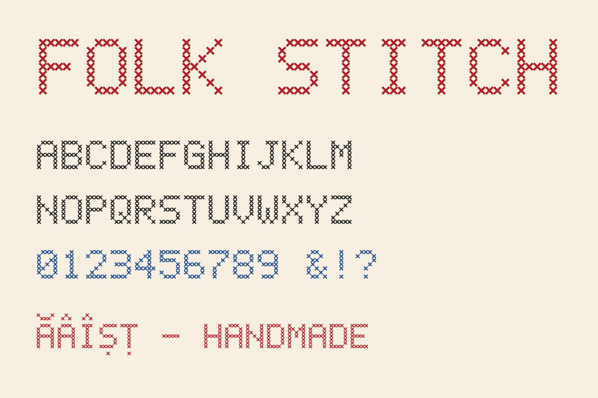
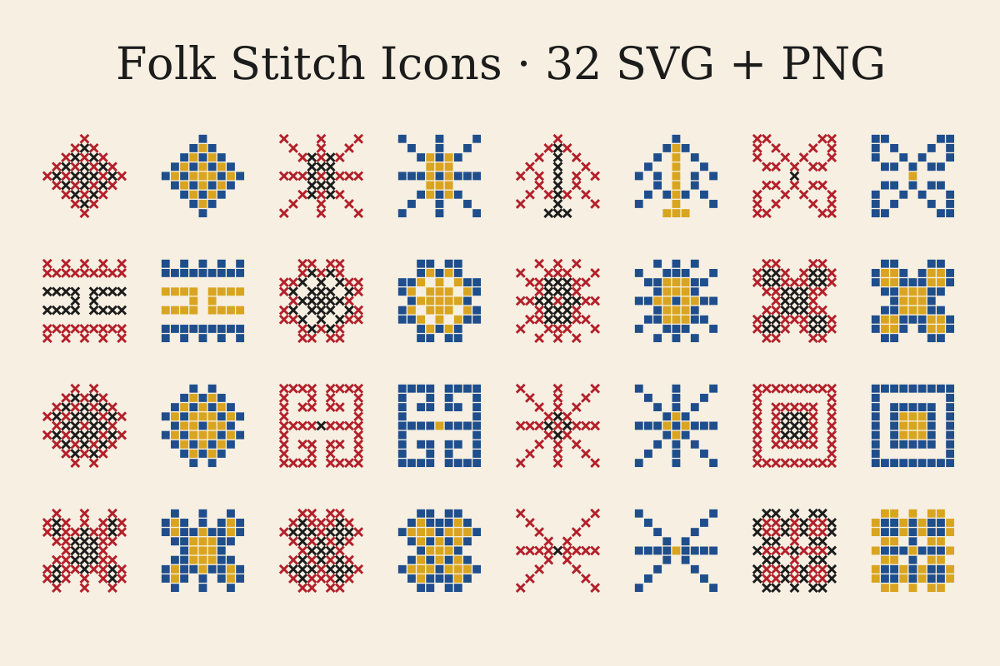
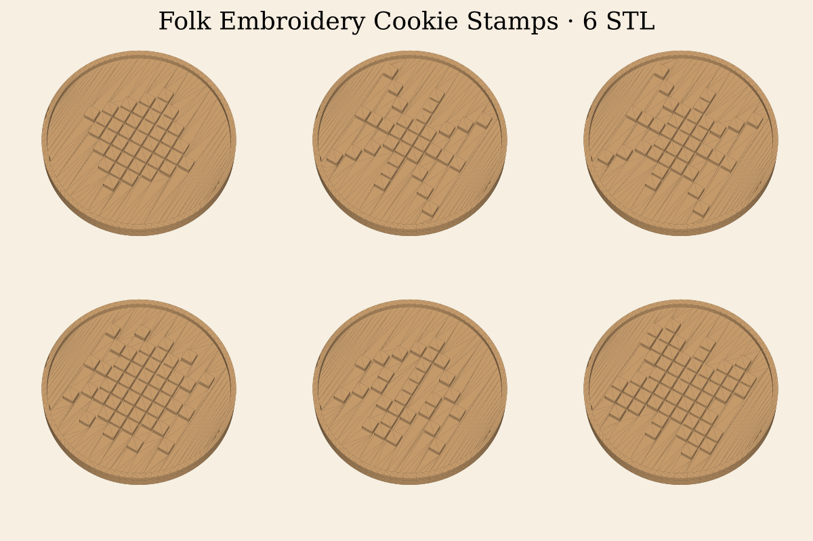
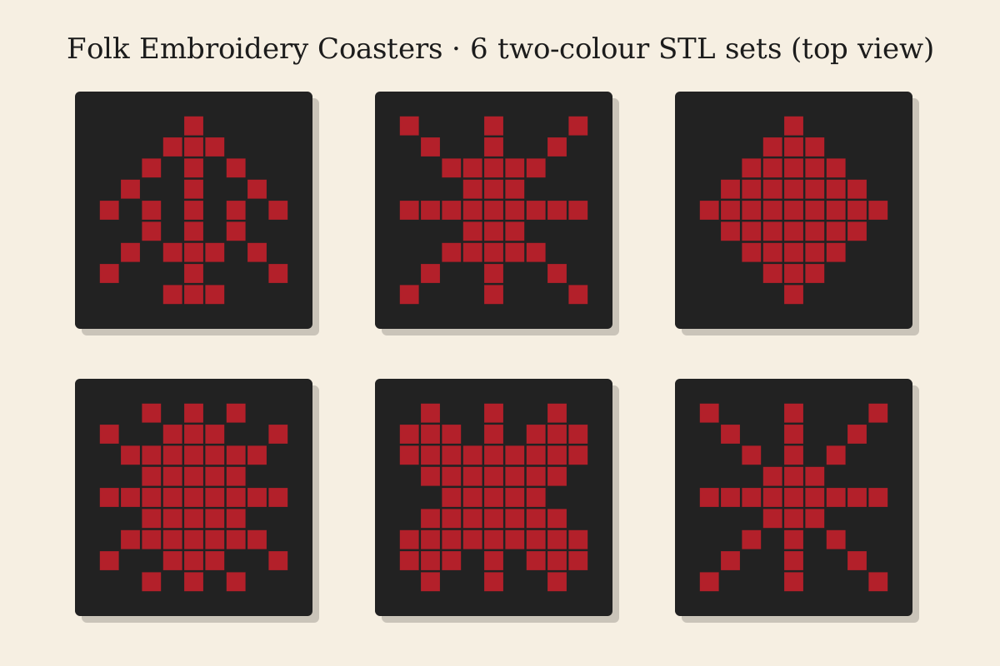

Catalonec Studio
Procedural digital assets: display fonts, icon sets, pixel-art game assets, browser games and 3D-printable models. Made with AI coding assistance.
Creative Fabrica user ID: ••••••13Folk Stitch collection (2026)




Shops and other work
- Game asset packs and games on itch.io: catalonec.itch.io
- Browser games: Grădina de stele, Lumen Links, Paper River, Cozy Quilt
- Developer plugins: PL/SQL Lint for JetBrains IDEs
- Source: github.com/catalonec1